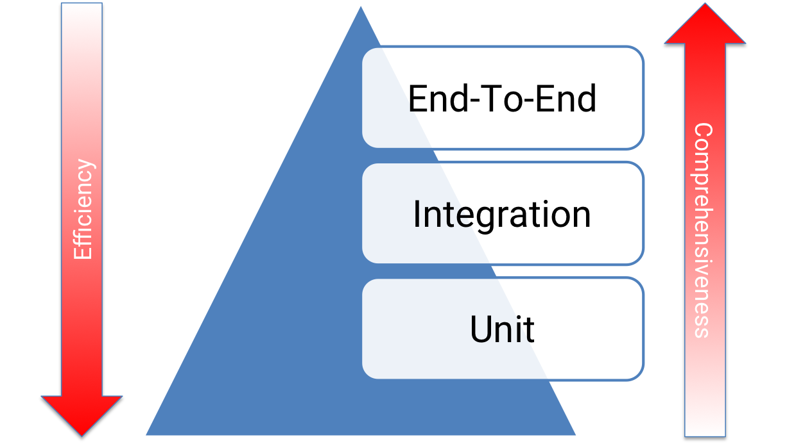

Foundations and Testing Strategy in Node.js
Component testing for real Nest.js behavior
Orbital Mechanics
This is what most of us think happen!

Orbital Mechanics
This is what actually happen

Super Fast Orbital Mechanics Intro by kerbals
How orbits work

So why to test anyway?


...software exception was caused during execution of a data conversion from 64-bit floating point to 16-bit signed integer value...
...function was not tested under simulated Ariane 5 flight conditions, and the design error was not discovered.
~500M USD bug!
Different types of tests
Today's focus
- UT + component + integration
- What a component means in Nest.js
- TestingModule and selective mocking
- Map it to LaunchPad demo project
Why unit tests are not enough
- Weak at integration seams
- Mocks can hide real failures
LaunchPad as an Example
POST /launches/:id/favorite- controller -> service -> persistence layer
Testing Pyramid

A practical balance for Nest.js services
- Unit: fast feedback on logic
- Component: main confidence layer
- Integration/E2E: critical paths only
What is a component in Nest.js?
- A meaningful slice of behavior
- Usually more than one class
- Often a module, controller, or service with collaborators
Component shapes you will test
Controller slice
HTTP request, validation, controller, service, response mapping
Service slice
Business logic with repositories, clients, and framework providers
Module slice
Several providers wired together as one feature boundary
Near-E2E slice
Nest app instance plus only a few controlled external seams
Unit vs. component: choose by risk
| Question | Prefer unit | Prefer component |
|---|---|---|
| Mostly pure logic? | Yes | No |
| Framework wiring matters? | No | Yes |
| Serializer / pipe / guard behavior matters? | No | Yes |
| Mocks would hide the main risk? | No | Yes |
Examples from a Nest app
- Unit: map launch status to a display label
- Component:
GET /launches/:idthrough controller + service - Near-E2E: create Nest app and issue real HTTP requests
TestingModule is the core tool
- Build a Nest app slice in memory
- Choose which providers are real
- Override only the seams you want to control
Typical TestingModule flow
const moduleRef = await Test.createTestingModule({
imports: [AppModule],
})
.overrideProvider(Ll2Service)
.useValue(mockLl2Service)
.compile();
const app = moduleRef.createNestApplication();
await app.init();Four ways to use it
Get a service
Fastest path for service-level component tests
Create an app
Exercise controllers through real HTTP requests
Import a feature module
Keep scope focused instead of booting the whole app
Override a provider
Swap one dependency without destroying the full slice
Example: get a service
TestingModule only wires DI
Compile DI, then get one provider.
import { Test } from '@nestjs/testing';
import { LaunchesService } from './launches.service';
import { Ll2Service } from './ll2.service';
const moduleRef = await Test.createTestingModule({
providers: [LaunchesService, Ll2Service],
}).compile();
const service = moduleRef.get(LaunchesService);
await expect(service.findAll()).resolves.toHaveLength(3);Exercise: src/tests-exercises/get-a-service.exercise.spec.ts
Example: create an app
Same module, plus HTTP surface
Turn the module into an HTTP app.
import { Test } from '@nestjs/testing';
import request from 'supertest';
import { LaunchesModule } from './launches.module';
const moduleRef = await Test.createTestingModule({
imports: [LaunchesModule],
}).compile();
const app = moduleRef.createNestApplication();
await app.init();
await request(app.getHttpServer()).get('/launches').expect(200);Exercise: src/tests-exercises/create-an-app.exercise.spec.ts
Example: import a feature module
Narrow the slice up front
Boot only the feature under test.
import { Test } from '@nestjs/testing';
import { FavouritesModule } from './favourites.module';
import { FavouritesService } from './favourites.service';
const moduleRef = await Test.createTestingModule({
imports: [FavouritesModule],
}).compile();
const service = moduleRef.get(FavouritesService);
await service.add('falcon-9');Exercise: src/tests-exercises/import-a-feature-module.exercise.spec.ts
Example: override a provider
Swap one external seam
Keep the slice real, change one dependency.
import { Test } from '@nestjs/testing';
import { LaunchesModule } from './launches.module';
import { Ll2Service } from './ll2.service';
const moduleRef = await Test.createTestingModule({
imports: [LaunchesModule],
})
.overrideProvider(Ll2Service)
.useValue({ findAll: jest.fn().mockResolvedValue([mockLaunch]) })
.compile();Exercise: src/tests-exercises/override-a-provider.exercise.spec.ts
Selective mocking beats total mocking
- Keep internal wiring real
- Mock expensive or unstable boundaries
- Avoid asserting implementation details
Where to keep real behavior vs. where to mock
- Keep routing, validation, serialization, and feature services real
- Mock upstream HTTP clients, publishers, and unstable SDKs first
- Assert user-visible outcomes more than internal calls
Controller test pattern
- Import feature module or declare controller + providers
- Create
INestApplication - Send requests with Supertest
Supertest 101
Supertest is a small library for making assertions against your HTTP server in tests.
import request from 'supertest';
const app = moduleRef.createNestApplication();
await app.init();
await request(app.getHttpServer())
.get('/launches')
.expect(200)Supertest 101 - continue
Common assertions check status, headers, and response body.
await request(app.getHttpServer())
.post('/launches/falcon-9/favorite')
.set('x-user-id', 'user-1')
.expect(201)
.expect('Content-Type', /json/)
.expect(({ body }) => {
expect(body.data.launchId).toBe('falcon-9');
});Service or module test pattern
- Compile a module with the real providers you care about
- Override only repositories, clients, or external tokens as needed
- Verify the slice works together before asserting outbound details
Common mistakes
- Mocking every provider by habit
- Calling controller methods directly for HTTP behavior
- Asserting that mocks were called instead of user-visible outcomes
Takeaways
- Unit tests are necessary, not sufficient
- Component tests add realistic confidence
- TestingModule is how we control realism in Nest
- Meeting 2 adds infrastructure realism on top of this foundation